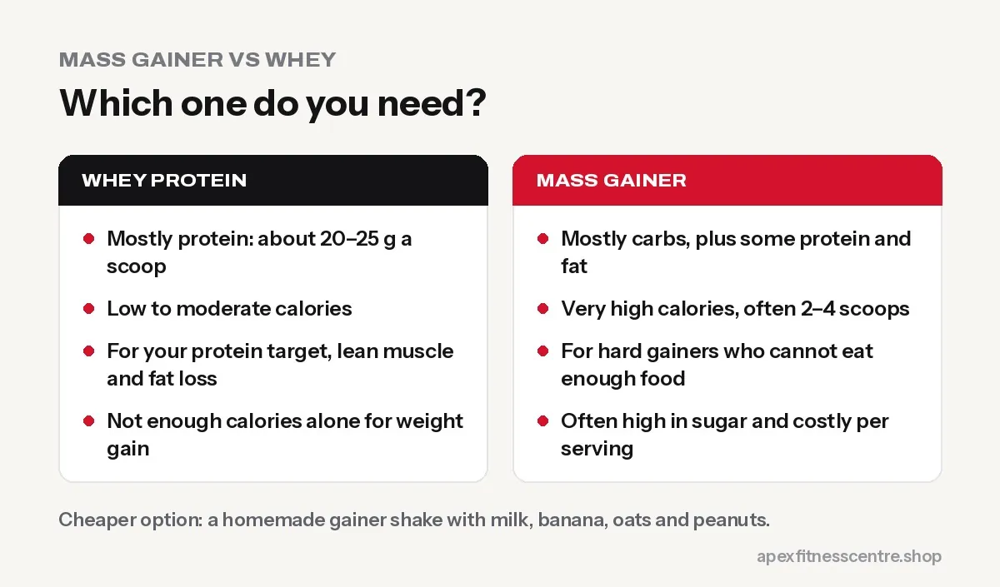

Mass Gainer vs Whey Protein: Which One Do You Need?
Mass gainer or whey? The real difference, who each suits, why many gainers are mostly sugar, and a cheaper homemade gainer shake with Nepali foods.

Whey protein is mostly protein. A mass gainer is mostly carbohydrate (often sugar) with some protein. Whey suits almost everyone who needs more protein. A mass gainer only makes sense for people who genuinely cannot eat enough calories to gain weight, and even then, a homemade shake is usually cheaper and better.
The difference in one table
| Whey protein | Mass gainer | |
|---|---|---|
| Main content | Protein | Carbohydrates + some protein + some fat |
| Calories per serving | Low to moderate | Very high |
| Protein per serving | Around 20–25 g (check label) | Varies widely |
| Serving size | 1 scoop | Often 2–4 large scoops |
| Best for | Reaching your protein target, lean muscle gain, fat loss | Hard gainers who can’t eat enough food |
| Main downside | Not enough calories alone for weight gain | Often high in sugar, expensive per serving |

Who should choose whey
- You want to build muscle without gaining much fat.
- You are losing weight and need a filling, high-protein snack.
- You eat enough food but not enough protein.
- You are a beginner who wants one simple supplement.
Who might consider a mass gainer
- You are very skinny, eat 5 to 6 times a day, and still cannot gain weight.
- You have a small appetite and find it hard to eat more solid food.
- You train hard (sports, heavy lifting) and burn a lot of energy.
Even then, read the label. Some gainers get most of their calories from sugar, which is not what you want every day.
The cheaper option: homemade gainer shake
Blend these together:
- 2 glasses (500 ml) full-cream milk
- 1 to 2 bananas
- 4 tablespoons oats (or high-protein oats)
- 1 tablespoon peanut butter or a handful of peanuts
- 1 scoop whey protein (optional)
- A spoon of honey or a few dates if you like it sweeter
This gives a large amount of energy and protein from real food, often for less than a serving of a branded gainer. Drink it between meals or after training.
For a full plan, read how to gain weight fast for skinny people.
Common myths
“Gainers build muscle faster”
Muscle needs training, enough protein and enough total calories. A gainer only helps with the calories. Without training, the extra weight is mostly fat.
“Whey makes you gain weight”
Whey has relatively few calories. It only causes weight gain if your total daily calories go up.
“I should take both”
Usually unnecessary. If you need extra calories, a homemade shake with whey covers both jobs.
How to choose a good product
- Genuine product: seal, batch, expiry, importer label. See how to spot fake supplements in Nepal.
- Read the nutrition table: protein, carbs and sugar per serving.
- Compare price per serving, not per tub.
- For whey options, see our best whey protein in Nepal guide.
Frequently asked questions
Is mass gainer good for skinny guys?
It can help if you truly cannot eat enough food, but many skinny people do better with more meals, calorie-dense foods and a homemade shake.
Can I take mass gainer without working out?
You will gain weight, but mostly fat. Combine it with strength training if you want muscle.
Is whey or mass gainer better for beginners?
For most beginners, whey (or no supplement at all) is the better choice.
Does mass gainer cause belly fat?
Any extra calories without training can add belly fat. Gainers make it easy to overshoot.
Sources
- International Society of Sports Nutrition position stand: protein and exercise (Jäger et al., 2017)
- Protein supplementation and resistance training gains: systematic review and meta-analysis (Morton et al., British Journal of Sports Medicine, 2018)
General information, not medical advice.
General information, not medical advice. Ask a doctor if you have a health condition. Results vary from person to person.
Comments
Loading comments…